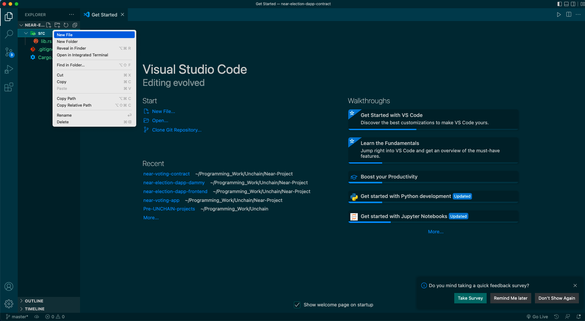

⛩ コントラクトの基盤を作ろう
投票なのになぜ NFT？
今回は投票システムを作るはずですがなぜNFTなのでしょうか？
それは候補者たちの情報、投票券の情報をどちらもNFTとして管理しようとしているからです。
具体的にいうと、候補者たちの情報はNFTとしてコントラクト内に保存されることになります。投票権に関しては投票をする人たちがmintして一時的に彼らのものとなり、投票を行うとコントラクトに回収されることになります。
このような理由からこのセクションではNFTを作るための基礎の部分をコーディングをしていきます！
NFT のコアとはなにか
NFTを作るにあたって開発者に意識してほしい点があります。
それは、NFTはあくまで識別子（unique identifier）である点です。 NFTには、多くの要素（例えば画像）をつけることができ、ついそちらに目がいきがちになってしまうのですが、あくまでそれは、識別子に紐付けられたデータなのです。
ここを意識しながら、開発をすると、理解度がぜんぜん違うと思うので、ぜひそれを意識しながらこれからのsectionを見ていってください！
ファイルを作成しよう
コーディングに入る前に必要なファイルを作成していきましょう！ ファイルを作成する方法は2つあります。
（1）ファイルを作るディレクトリに移動してターミナルで下のコマンドをターミナルで実行する
touch FILE_NAME
（2）下のようにワークスペース上でファイルを作るディレクトリを右クリックしてファイル名を記入 
個人的には（2）の方が楽なのでこちらの方法でやることが多いです。このどちらかの方法を用いてコントラクトのディレクトリ(ここではcontract)に以下のようなファイル構造を作成してみましょう。
末尾が/となっているものはディレクトリ、そうでないものはファイルであることを示しています。
contract/
├── Cargo.lock
├── Cargo.toml
├── src/
+ │ ├── vote.rs
+ │ ├── enumeration.rs
+ │ ├── internal.rs
│ ├── lib.rs
+ │ ├── metadata.rs
+ │ ├── mint.rs
+ │ └── nft_core.rs
└── target/
├── CACHEDIR.TAG
└── debug/
これでファイルの作成は完了です！
また、ここからはコントラクトの作成をメインに行うのでターミナルでcdコマンドを使ってcontractへ移動しておきましょう
NFT に関する情報を格納するためのコードを記述しよう
NFTを作るためのライブラリはありますが、今回はあえてライブラリを使わずに一から作っていきます。NFTに必要な要素として
情報（画像のURL、名前、説明etc）を格納できること
mint、transferができること
が挙げられます。
Lesson1では1. の情報の格納を実装していきます！
Cargo.toml ファイルの編集
序盤でも説明しましたが、Cargo.tomlファイルではこのコントラクトの情報が記述されています。作成者、バージョン、使用するライブラリなどの情報です。
特に最後の使用するライブラリを記述していないとコンパイル時に使用できずエラーが出てしまうので書き漏れのないように下のように書き換えましょう。
[Cargo.toml]
[package]
name = "contract"
version = "0.1.0"
authors = ["YOUR_NAME", "YOUR_MAIL_ADDRESS"]
edition = "2021"
# See more keys and their definitions at https://doc.rust-lang.org/cargo/reference/manifest.html
[dependencies]
near-sdk = "4.0.0"
[lib]
crate-type = ["cdylib", "rlib"]
[profile.release]
codegen-units=1
opt-level = "z"
lto = true
debug = false
panic = "abort"
overflow-checks = true
※[dependencies]のnear-sdkは2022/7/23時点でのバージョンなので、動かないようなら作成時の最新バージョンを入れてみてください
では次はlib.rsに移って、元々記述してあるコードを上書きして、使用するライブラリを下のように宣言してみましょう。
[lib.rs]
use near_sdk::borsh::{self, BorshDeserialize, BorshSerialize};
use near_sdk::collections::{LazyOption, LookupMap, UnorderedMap, UnorderedSet};
use near_sdk::json_types::U128;
use near_sdk::serde::{Deserialize, Serialize};
use near_sdk::{env, near_bindgen, AccountId, Balance, CryptoHash, PanicOnDefault, Promise};
mod vote;
mod enumeration;
mod internal;
mod metadata;
mod mint;
mod nft_core;
pub use crate::enumeration::*;
use crate::internal::*;
pub use crate::metadata::*;
pub use crate::mint::*;
pub use crate::nft_core::*;
pub use vote::*;
それぞれのライブラリについては使用する際に細かく説明するのでここでは割愛しますが、大まかに何を記述しているのかを説明します。
最初の部分ではCargo.tomlファイルで追加したnear-sdkの中で今回使う部分を宣言しています。
use near_sdk::borsh::{self, BorshDeserialize, BorshSerialize};
use near_sdk::collections::{LazyOption, LookupMap, UnorderedMap, UnorderedSet};
use near_sdk::json_types::U128;
use near_sdk::serde::{Deserialize, Serialize};
use near_sdk::{env, near_bindgen, AccountId, Balance, CryptoHash, PanicOnDefault, Promise};
次の部分ではこのプロジェクト内で作成したファイルを取り込んで使えるようにしています。(拡張子である.rsは除いて書くのがルールです。)
mod vote;
mod enumeration;
mod internal;
mod metadata;
mod mint;
mod nft_core;
これはlib.rs が crate ルートというものであることから必要なことです。crateルートとはコンパイルの開始するファイルのことです。
なのでここに使用するライブラリが書かれていなければ使わないと判断されてしまいます。
最後の部分では取り込んだファイルの内容をlib.rsで使えるようにしています。
pub use crate::enumeration::*;
use crate::internal::*;
pub use crate::metadata::*;
pub use crate::mint::*;
pub use crate::nft_core::*;
pub use vote::*;
crateというのはcrateルートのlib.rsのことであり、::というのはファイル構造の記述で使われる/と同じ意味で1つ下の階層のものを表すときに使われます。
末尾の*はそのファイルないの全てのメソッドが全て使えるよということを示しています。また、最初のpubはどこでも使える（public）ということを示しています。
後で説明しますがinternal.rsは内部でしか使ってほしくないのでpubキーワードはついていないはずです。
これでライブラリの宣言は完了したので、コントラクトが格納するデータの型を宣言していきましょう。
格納するデータの型を宣言する
次はmetadata.rsへ移動して下のように格納するデータの型を構造体の形で宣言していきましょう
エラーが出ると思いますが、気にせず進みましょう。
[metadata.rs]
// 以下を追加してください
use crate::*;
pub type TokenId = u128;
pub type CandidateName = String;
pub type TokenKind = String;
pub type HasVoted = bool;
pub type ReceiverId = AccountId;
pub type Likes = f32;
#[derive(BorshDeserialize, BorshSerialize, Serialize, Deserialize, Clone)]
#[serde(crate = "near_sdk::serde")]
// metadata of contract
pub struct NFTContractMetadata {
pub spec: String,
pub name: String,
pub reference: String,
}
下の部分ではクレートルートであるlib.rsの中の全てのものを使うことができることが宣言されています。また、pub typeで特定の文字列が型を表すようにしています。
use crate::*;
pub type TokenId = u128;
pub type CandidateName = String;
pub type TokenKind = String;
pub type HasVoted = bool;
pub type ReceiverId = AccountId;
pub type Likes = f32;
この部分ではderiveによって型に対して使えるトレイトを増やしています。トレイトとは特定の型に存在する共通の振る舞いのことです。
そのあとに続くBorshDeserialize, ...などが提供するトレイトをNFTContractMetadataという構造体が使えるようになるということです。
#[derive(BorshSerialize, BorshDeserialize, Serialize, Deserialize, Clone)]
#[serde(crate = "near_sdk::serde")]
それぞれのライブラリの意味は以下のようになっています。
BorshSerialize: バイナリ形式でデータ構造をシリアライズすること。シリアライズとはプログラムの実行状態や複雑なデータ構造などを1つの文字列やバイト列として表現することでデータをやりとりしやすい形にすることです。
BorshDeserialize:バイナリ形式でシリアライズされたデータを元のデータに戻すこと。
Serialize: json形式でデータ構造をシリアライズすること。バイナリ形式でやることに対して人が読むことができるという利点がある一方でデータの容量をより多くとってしまうという短所がある。
Deserialize: json形式でリアライズされたデータを元のデータに戻すこと。
Clone: 元のデータとは違う保管場所を準備して、そこに元のデータをコピーして保管できる。これはrustの所有権の概念と関係してくるのでこちらを参照してください。
#[serde(crate = "near_sdk::serde")]: Serializeを使う時に必要なもの
これらの下に記述しているNFTContractMetadataという構造体はコントラクトそのものの情報を記述しています。スペック、名前、説明文を入れることができるようになっています。
また、Stringやu128という型についてはこちらを、Optionという型についてはこちらをご覧ください。
pub struct NFTContractMetadata {
pub spec: String,
pub name: String,
pub reference: String,
}
同じようにしてNFTの持つべき情報をもった構造体(TokenMetadata)やトークンのオーナーとトークンのメタデータを一緒にしている構造体(JsonToken)を宣言していきましょう。
[metadata.rs]
use crate::*;
pub type TokenId = u128;
pub type CandidateName = String;
pub type TokenKind = String;
pub type HasVoted = bool;
pub type ReceiverId = AccountId;
pub type Likes = f32;
#[derive(BorshDeserialize, BorshSerialize, Serialize, Deserialize, Clone)]
#[serde(crate = "near_sdk::serde")]
pub struct NFTContractMetadata {
pub spec: String,
pub name: String,
pub reference: String,
}
+ #[derive(BorshDeserialize, BorshSerialize, Serialize, Deserialize)]
+ #[serde(crate = "near_sdk::serde")]
+ pub struct TokenMetadata {
+ pub title: Option<String>,
+ pub description: Option<String>,
+ pub media: String,
+ pub media_CID: String,
+ pub candidate_name: Option<String>,
+ pub candidate_manifest: Option<String>,
+ pub token_kind: String,
+ pub token_id: Option<u128>,
+ }
+
+ #[derive(BorshDeserialize, BorshSerialize)]
+ pub struct TokenOwner {
+ pub owner_id: AccountId,
+ }
+
+ #[derive(Serialize, Deserialize)]
+ #[serde(crate = "near_sdk::serde")]
+
+ // metadata of type of Json
+ pub struct JsonToken {
+ pub owner_id: AccountId,
+ pub metadata: TokenMetadata,
+ }
TokenMetadataという構造体について注意しておかなければいけないことを説明します。構造体の中で宣言されている名前についてです。
どのような名前にしてもNFT自体に値として保存されるのですが、title, mediaに関しては間違えないようにしてください。Walletに画像やそのNFTの名前が表示されるのはこれらの名前の変数に格納されている値を参照しているからです。
特に今回作成するシステムでは投票券がユーザーのwallet上で見ることができる必要があるのでここの部分は十分注意して記述しないと何のエラーもないのに見れないという地獄に陥ってしまいます。これで１日潰す人がいるほどですから 🫣
では最後に先ほど出てきたトレイトを自分で実装してみましょう！
[metadata.rs]
use crate::*;
pub type TokenId = u128;
pub type CandidateName = String;
pub type TokenKind = String;
pub type HasVoted = bool;
pub type ReceiverId = AccountId;
pub type Likes = f32;
#[derive(BorshDeserialize, BorshSerialize, Serialize, Deserialize, Clone)]
#[serde(crate = "near_sdk::serde")]
pub struct NFTContractMetadata {
pub spec: String,
pub name: String,
pub reference: String,
}
#[derive(BorshDeserialize, BorshSerialize, Serialize, Deserialize)]
#[serde(crate = "near_sdk::serde")]
//metadata of Token
pub struct TokenMetadata {
pub title: Option<String>,
pub description: Option<String>,
pub media: String,
pub media_CID: String,
pub candidate_name: Option<String>,
pub candidate_manifest: Option<String>,
pub token_kind: String,
pub token_id: Option<u128>,
}
// metadata of Token Owner
#[derive(BorshDeserialize, BorshSerialize)]
pub struct TokenOwner {
pub owner_id: AccountId,
}
#[derive(Serialize, Deserialize)]
#[serde(crate = "near_sdk::serde")]
// metadata of type of Json
pub struct JsonToken {
pub owner_id: AccountId,
pub metadata: TokenMetadata,
}
+ pub trait NFTTokenMetadata {
+ fn nft_metadata(&self) -> NFTContractMetadata;
+ }
+ // view function for contract info
+ #[near_bindgen]
+ impl NFTTokenMetadata for Contract {
+ fn nft_metadata(&self) -> NFTContractMetadata {
+ self.metadata.get().unwrap()
+ }
+ }
ここではNFTTokenMetadataという構造体で使うことができる関数を追加しました。内容としてはコントラクトに格納されているNFTのメタデータを見ることができるというものです。
これでmetadata.rsは完成です。
次にコントラクトが持つ情報を記述していきましょう。なので次はlib.rsに移動してコントラクトが持つべき情報を下のように記述していきましょう。
[lib.rs]
use near_sdk::borsh::{self, BorshDeserialize, BorshSerialize};
use near_sdk::collections::{LazyOption, LookupMap, UnorderedMap, UnorderedSet};
use near_sdk::json_types::U128;
use near_sdk::serde::{Deserialize, Serialize};
use near_sdk::{env, near_bindgen, AccountId, Balance, CryptoHash, PanicOnDefault, Promise};
mod vote;
mod enumeration;
mod internal;
mod metadata;
mod mint;
mod nft_core;
pub use crate::enumeration::*;
use crate::internal::*;
pub use crate::metadata::*;
pub use crate::mint::*;
pub use crate::nft_core::*;
pub use vote::*;
+ #[near_bindgen]
+ #[derive(BorshDeserialize, BorshSerialize, PanicOnDefault)]
+ pub struct Contract {
+ // contract state value
+ pub owner_id: AccountId,
+ pub tokens_per_owner: LookupMap<AccountId, UnorderedSet<TokenId>>,
+ pub tokens_per_kind: LookupMap<TokenKind, UnorderedSet<TokenId>>,
+ pub tokens_by_id: LookupMap<TokenId, TokenOwner>,
+ pub token_metadata_by_id: UnorderedMap<TokenId, TokenMetadata>,
+ pub metadata: LazyOption<NFTContractMetadata>,
+ pub token_id_counter: u128,
+ pub likes_per_candidate: LookupMap<TokenId, Likes>,
+ pub added_voter_list: LookupMap<ReceiverId, TokenId>,
+ pub voted_voter_list: LookupMap<ReceiverId, u128>,
+ pub is_election_closed: bool,
+ }
+ #[derive(BorshSerialize)]
+ pub enum StorageKey {
+ TokensPerOwner,
+ TokensPerKind,
+ TokensPerOwnerInner { account_id_hash: CryptoHash },
+ TokensPerKindInner { token_kind: TokenKind },
+ TokensById,
+ TokenMetadataById,
+ TokensPerTypeInner { token_type_hash: CryptoHash },
+ NFTContractMetadata,
+ LikesPerCandidate,
+ AddedVoterList,
+ VotedVoterList,
+ }
追加したものを上から順番に説明していきましょう。まず#[near_bindgen]はnearのチェーン上で使えるようにするためのものです。
次のderiveの中身にあるPanicOnDefaultは次のレッスンで出てくる初期化の関数がまだ実行されていない時にエラーを出してくれるものです。
次に構造体の内部の変数は以下の意味を持っています。
owner_id: コントラクトのオーナーが誰かが入ることになります。AccountIdという型はString型なのですが、自動的にWallet Idとして正しいかチェックしてくれる便利な型です。tokens_per_owner: ユーザーのWallet Idがkeyとなって、所有するNFTのメタデータが格納されますtokens_per_kind: kind（種類）がkeyとなって、それに分類される（属性をもつ）NFTが格納されます。具体的には投票券と候補者情報を区別するために用意されています。tokens_by_id: tokenのidがkeyとなって、それに対応するtokenのオーナーが格納されます。この変数の目的としてはNFTを他人に送る時にそのトークンが存在しているのか、その保持者は送信者と同一ではないかを確認するためです。token_metadata_by_id: tokenのidがkeyとなって、それに対応するNFTのメタデータが格納されます。metadata: NFTのメタデータが配列に格納されています。token_id_counter: tokenのIdをカウントするための変数です。mintされるたびに1足されていきます。likes_per_candidate: tokenのidがkeyとなって、それに対応する得票数が格納されています。added_voter_list: ユーザーのWallet Idがkeyとなって、それに対応するtokenのIdが格納されます。これは投票券がすでに配布されているかを確認するために必要になります。voted_voter_list: ユーザーのWallet Idがkeyとなって、0か1の値が返されます。added_voter_listと違ってtokenのIdが返ってこないのはフロントでの実装上必要がないからです。ここで説明してもピンとこないかもしれないのでフロントでの実装時に説明します。is_election_closed: この選挙が終わっているかどうかをbool型で格納します。この管理はコントラクトをdeployした人のみができるようにする必要があります。
#[near_bindgen]
#[derive(BorshDeserialize, BorshSerialize, PanicOnDefault)]
pub struct Contract {
// contract state value
pub owner_id: AccountId,
pub tokens_per_owner: LookupMap<AccountId, UnorderedSet<TokenId>>,
pub tokens_per_kind: LookupMap<TokenKind, UnorderedSet<TokenId>>,
pub tokens_by_id: LookupMap<TokenId, TokenOwner>,
pub token_metadata_by_id: UnorderedMap<TokenId, TokenMetadata>,
pub metadata: LazyOption<NFTContractMetadata>,
pub token_id_counter: u128,
pub likes_per_candidate: LookupMap<TokenId, Likes>,
pub added_voter_list: LookupMap<ReceiverId, TokenId>,
pub voted_voter_list: LookupMap<ReceiverId, u128>,
pub is_election_closed: bool,
}
その次に記述しているのはそれぞれの変数に対応するenum型の変数で初期化の際に必要になります。これはそれぞれの変数が格納されるストレージのアドレスの接頭辞をユニークなものにするためのものです。
詳しくはこちらをご覧ください。
#[derive(BorshSerialize)]
pub enum StorageKey {
TokensPerOwner,
TokensPerKind,
TokensPerOwnerInner { account_id_hash: CryptoHash },
TokensPerKindInner { token_kind: TokenKind },
TokensById,
TokenMetadataById,
TokensPerTypeInner { token_type_hash: CryptoHash },
NFTContractMetadata,
LikesPerCandidate,
AddedVoterList,
VotedVoterList,
}
🙋♂️ 質問する
ここまでの作業で何かわからないことがある場合は、Discordの#nearで質問をしてください。
ヘルプをするときのフローが円滑になるので、エラーレポートには下記の4点を記載してください ✨
1. 質問が関連しているセクション番号とレッスン番号
2. 何をしようとしていたか
3. エラー文をコピー&ペースト
4. エラー画面のスクリーンショット
長かったですがこれでデータとそれらの型の宣言は完了しました！
次からは実際にこれらのデータに値を入れてコントラクトの情報を更新する準備をしていきましょう！